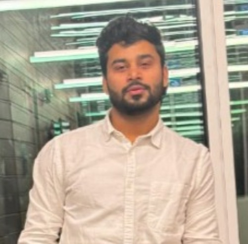

Home
Welcome to My MBA Portfolio
I’m Manav Sidhu, an MBA student at University Canada West in Vancouver, with a strong foundation in Economics and diverse experience in customer-facing and analytical roles. My journey combines academic rigor with practical business insights, positioning me for roles that blend customer experience, data analysis, and process improvement.
About Me
Currently pursuing my MBA with an expected graduation in 2026, I bring a unique perspective shaped by my Bachelor of Arts in Economics from the University of Delhi (2023, 1st Division) and hands-on experience in retail operations, sales, and customer service. My career interests center around business analytics, operations management, and creating seamless customer experiences.
Professional Summary
Passionate business professional with proven expertise in customer service excellence, inventory management, and data-driven decision making. My experience spans from high-volume retail operations to strategic sales and marketing initiatives, demonstrating adaptability and strong analytical capabilities.
Key Strengths: - Customer service excellence and relationship building - Point-of-sale systems and inventory accuracy - CRM management and data analysis - Advanced Excel proficiency and business analytics - Cross-functional collaboration and process improvement

Professional Highlights
- Customer Service Excellence: Delivered exceptional customer experiences at Park Gate Farm Market, maintaining high satisfaction scores while handling complex transactions and inventory management
- Data Management: Maintained accurate CRM records and generated insightful reports for marketing campaigns at Spy Jet, contributing to data-driven decision making
- Operational Efficiency: Coordinated high-volume orders and monitored inventory at Delhi Fusion, ensuring smooth operations during peak periods
- Technical Proficiency: Advanced Excel skills for business analytics, with experience in data visualization and process optimization
“The only way to do great work is to love what you do. If you haven’t found it yet, keep looking. Don’t settle.” — Steve Jobs
This quote reflects my approach to continuous learning and professional development. I believe in combining passion with purpose, leveraging both traditional business knowledge and emerging technologies to drive meaningful results.